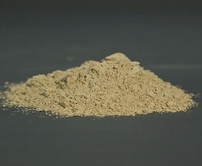
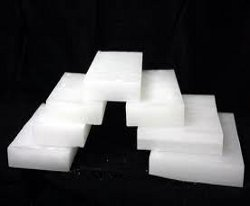

Base Oil
Base Oil is the name given to lubrication grade oils initially produced from refining crude oil (mineral base oil) or through chemical synthesis (synthetic base oil).more...
Bitumen
Bitumen is a mixture of Organic Liquids that are highly Viscous, Black, Sticky, Entirely Soluble in Carbon Disulfide, and composed primarily of highly condensed Polycyclic Aromatic Hydrocarbons.more...

Fuller Earth
Fuller’s earth consists chiefly of hydrated aluminum silicates that contain metal ions such as magnesium, sodium, and calcium within their structure.more...

Paraffin Wax
Paraffin wax, classified as a chemical preservative, is widely used on fruits, vegetables, and candy to make them shiny and pretty as well as to retard moisture loss and spoilage.more...